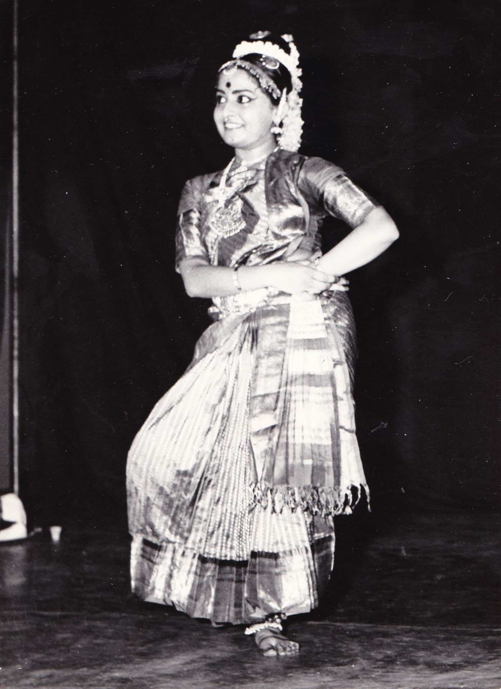
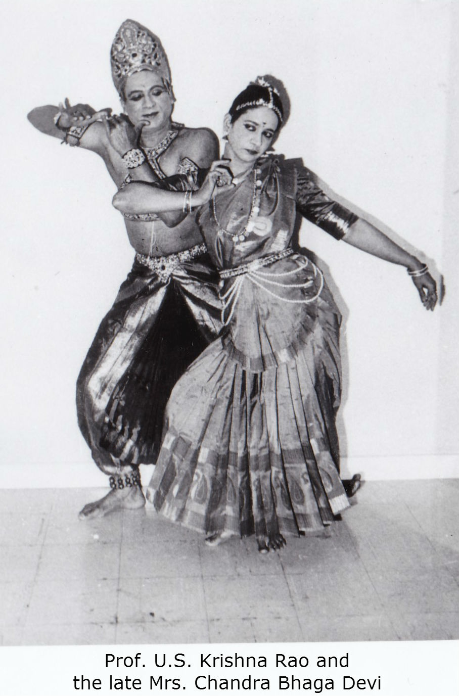

Sheela Chandrashekar is the teacher and founder/director of Rathi School of Dance in Ottawa. Sheela came to Canada after a long and rigorous training and a series of accomplishments in Bharatha Natyam.

She had her initial foundation in the art from the late Guru Sri Muthaiah Pillai of Pandanallore. Later on, the famous dancer couple from Bangalore, India Prof. U.S. Krishna Rao and the late Mrs. Chandra Bhaga Devi tutored her. Under their able guidance and careful grooming, Sheela attained professional standards and was intensively trained not only as a performer but also in choreography and teaching Bharatha Natyam under her Gurus. She is currently training under guru Prof. Krishnamurty from Bangalore, India
Sheela has performed on stage and on T.V., scores of times in many cities in India, Canada and United States winning the acclaim of both the public and the press as a dancer of eminence. She was also teaching Bharatha Natyam to a large number of students in Bangalore under the auspices of the Bharathiya Vidya Bhavan. Here in Canada she is continuing this tradition by teaching Bharatha Natyam, composing, choreographing and teaching.